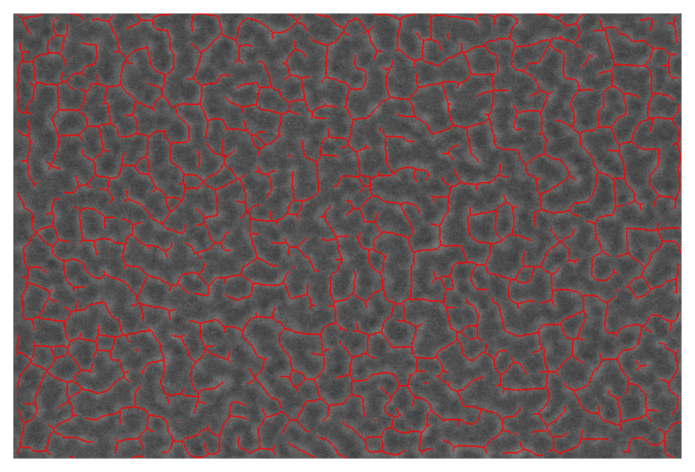
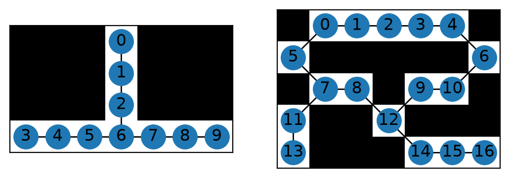

Getting started: Skeleton analysis with Skan#
Skeleton analysis allows us to measure fine structure in samples. In this case, we are going to measure the network formed by a protein called spectrin inside the membrane of a red blood cell, either infected by the malaria parasite Plasmodium falciparum, or uninfected.
0. Extracting a skeleton from an image#
Skan’s primary purpose is to analyse skeletons. (It primarily mimics the “Analyze Skeleton” Fiji plugin.) In this section, we will run some simple preprocessing on our source images to extract a skeleton, provided by Skan and scikit-image, but this is far from the optimal way of extracting a skeleton from an image. Skip to section 1 for Skan’s primary functionality.
First, we load the images. These images were produced by an FEI scanning electron microscope. ImageIO provides a method to read these images, including metadata.
from glob import glob
import imageio as iio
files = glob('../example-data/*.tif')
image0 = iio.v2.imread(files[0], format='fei')
We display the images with Matplotlib.
import matplotlib.pyplot as plt
%matplotlib inline
%config InlineBackend.figure_format='retina'
fig, ax = plt.subplots()
ax.imshow(image0, cmap='gray');

As an aside, we can extract the pixel spacing in meters from the .meta attribute of the ImageIO image:
import numpy as np
spacing = image0.meta['Scan']['PixelHeight']
spacing_nm = spacing * 1e9 # nm per pixel
dim_nm = np.array(image0.shape) / spacing_nm
fig, ax = plt.subplots()
ax.imshow(image0, cmap='gray',
extent=[0, dim_nm[1], dim_nm[0], 0]);
ax.set_xlabel('x (nm)')
ax.set_ylabel('y (nm)');

This is an image of the inside of the membrane of a red blood cell. We want to measure the network of bright regions in this image, which is made up of a protein called spectrin. Our strategy will be to:
smooth the image with Gaussian smoothing
threshold the image with Sauvola thresholding (Otsu thresholding also works)
skeletonise the resulting binary image
These steps can be performed by a single function in Skan, skan.pre.threshold. We use parameters derived from the metadata, so that our analysis is portable to images taken at slightly different physical resolutions.
from skan.pre import threshold
smooth_radius = 5 / spacing_nm # float OK
threshold_radius = int(np.ceil(50 / spacing_nm))
binary0 = threshold(image0, sigma=smooth_radius,
radius=threshold_radius)
fig, ax = plt.subplots()
ax.imshow(binary0);

(There are some thresholding artifacts around the left edge, due to the dark border caused by microscope imaging drift and alignment. We will ignore this in this document, but the Skan GUI allows for a “crop” parameter to filter out these regions.)
Finally, we skeletonise this binary image:
from skimage import morphology
skeleton0 = morphology.skeletonize(binary0)
Skan has functions for drawing skeletons in 2D:
from skan import draw
fig, ax = plt.subplots()
draw.overlay_skeleton_2d(image0, skeleton0, dilate=1, axes=ax);
/opt/hostedtoolcache/Python/3.12.15/x64/lib/python3.12/site-packages/skan/draw.py:89: FutureWarning: `binary_dilation` is deprecated since version 0.26 and will be removed in version 0.28. Use `skimage.morphology.dilation` instead. Note the lack of mirroring for non-symmetric footprints (see docstring notes).
skeleton = morphology.binary_dilation(skeleton, selem)


1. Measuring the length of skeleton branches#
Now that we have a skeleton, we can use Skan’s primary functions: producing a network of skeleton pixels, and measuring the properties of branches along that network.
from skan.csr import skeleton_to_csgraph
pixel_graph, coordinates = skeleton_to_csgraph(skeleton0)
The pixel graph is a SciPy CSR matrix in which entry \((i, j)\) is 0 if pixels \(i\) and \(j\) are not connected, and otherwise is equal to the distance between pixels \(i\) and \(j\) in the skeleton. This will normally be 1 between adjacent pixels and \(\sqrt{2}\) between diagonally adjacent pixels, but in this can be scaled by a spacing= keyword argument that sets the scale (and this scale can be different for each image axis). In our case, we know the spacing between pixels, so we can measure our network in physical units instead of pixels:
pixel_graph0, coordinates0 = skeleton_to_csgraph(skeleton0, spacing=spacing_nm)
The second variable contains the coordinates (in pixel units) of the points in the pixel graph. Finally, degrees is an image of the skeleton, with each skeleton pixel containing the number of neighbouring pixels. This enables us to distinguish between junctions (where three or more skeleton branches meet), endpoints (where a skeleton ends), and paths (pixels on the inside of a skeleton branch.
These intermediate objects contain all the information we need from the skeleton, but in a more useful format. It is still difficult to interpret, however, and the best option might be to visualise a couple of minimal examples. Skan provides a function to do this. (Because of the way NetworkX and Matplotlib draw networks, this method is only recommended for very small networks.)
from skan import _testdata
g0, c0 = skeleton_to_csgraph(_testdata.skeleton0)
g1, c1 = skeleton_to_csgraph(_testdata.skeleton1)
fig, axes = plt.subplots(1, 2)
draw.overlay_skeleton_networkx(g0, np.transpose(c0), image=_testdata.skeleton0,
axis=axes[0])
draw.overlay_skeleton_networkx(g1, np.transpose(c1), image=_testdata.skeleton1,
axis=axes[1])
<Axes: >


For more sophisticated analyses, the skan.Skeleton class provides a way to keep all relevant information (the CSR matrix, the image, the node coordinates…) together.
The function skan.summarize uses this class to trace the path from junctions (node 6 in the left graph, 7 and 12 in the right graph) to endpoints (0, 3, and 9 on the left, and 13 and 16 on the right) and other junctions. It then produces a junction graph and table in the form of a pandas DataFrame.
Let’s go back to the red blood cell image to illustrate this graph.
from skan import Skeleton, summarize
branch_data = summarize(Skeleton(skeleton0, spacing=spacing_nm), separator='_')
branch_data.head()
| skeleton_id | node_id_src | node_id_dst | branch_distance | branch_type | mean_pixel_value | stdev_pixel_value | image_coord_src_0 | image_coord_src_1 | image_coord_dst_0 | image_coord_dst_1 | coord_src_0 | coord_src_1 | coord_dst_0 | coord_dst_1 | euclidean_distance | |
|---|---|---|---|---|---|---|---|---|---|---|---|---|---|---|---|---|
| 0 | 0 | 0 | 691 | 52.215399 | 1 | 1.0 | 0.0 | 0 | 64 | 13 | 21 | 0.0 | 69.06688 | 14.02921 | 22.66257 | 48.478642 |
| 1 | 1 | 1 | 740 | 41.608855 | 0 | 1.0 | 0.0 | 0 | 128 | 14 | 159 | 0.0 | 138.13376 | 15.10838 | 171.58803 | 36.707647 |
| 2 | 2 | 8 | 833 | 22.815959 | 1 | 1.0 | 0.0 | 0 | 281 | 16 | 292 | 0.0 | 303.24677 | 17.26672 | 315.11764 | 20.953691 |
| 3 | 2 | 11 | 899 | 59.769589 | 1 | 1.0 | 0.0 | 0 | 364 | 17 | 318 | 0.0 | 392.81788 | 18.34589 | 343.17606 | 52.923359 |
| 4 | 2 | 17 | 907 | 30.893850 | 1 | 1.0 | 0.0 | 0 | 630 | 17 | 651 | 0.0 | 679.87710 | 18.34589 | 702.53967 | 29.157568 |
The branch distance is the sum of the distances along path nodes between two nodes, in natural scale (given by spacing).
The branch type is coded by number as:
- endpoint-to-endpoint (isolated branch)
- junction-to-endpoint
- junction-to-junction
- isolated cycle
Next come the coordinates in natural space, the Euclidean distance between the points, and the coordinates in image space (pixels). Finally, the unique IDs of the endpoints of the branch (these correspond to the pixel indices in the CSR representation above), and the unique ID of the skeleton that the branch belongs to.
This data table follows the “tidy data” paradigm, with one row per branch, which allows fast exploration of branch statistics. Here, for example, we plot the distribution of branch lengths according to branch type:
branch_data.hist(column='branch_distance', by='branch_type', bins=100);

We can see that junction-to-junction branches tend to be longer than junction-to-endpoint and junction isolated branches, and that there are no cycles in our dataset.
We can also represent this visually with the overlay_euclidean_skeleton, which colormaps branches according to a user-selected attribute in the table:
draw.overlay_euclidean_skeleton_2d(image0, branch_data,
skeleton_color_source='branch_type');

2. Comparing different skeletons#
Now we can use Python’s data analysis tools to answer a scientific question: do malaria-infected red blood cells differ in their spectrin skeleton?
import pandas as pd
images = [iio.v2.imread(file, format='fei')
for file in files]
spacings = [image.meta['Scan']['PixelHeight']
for image in images]
spacings_nm = 1e9 * np.array(spacings)
def skeletonize(images, spacings_nm):
smooth_radii = 5 / spacings_nm # float OK
threshold_radii = np.ceil(50 / spacings_nm).astype(int)
binaries = (threshold(image, sigma=smooth_radius,
radius=threshold_radius)
for image, smooth_radius, threshold_radius
in zip(images, smooth_radii, threshold_radii))
skeletons = map(morphology.skeletonize, binaries)
return skeletons
skeletons = skeletonize(images, spacings_nm)
tables = [summarize(Skeleton(skeleton, spacing=spacing), separator='_')
for skeleton, spacing in zip(skeletons, spacings_nm)]
for filename, dataframe in zip(files, tables):
dataframe['filename'] = filename
table = pd.concat(tables)
This analysis is quite verbose, which is why the skan.pipe module exists. It will be covered in a separate document.
Now, however, we have a tidy data table with information about the sample origin of the data, allowing us to analyse the effects of treatment on our skeleton measurement. We will use only junction-to-junction branches.
import seaborn as sns
j2j = (table[table['branch_type'] == 2].
rename(columns={'branch_distance':
'branch distance (nm)'}))
per_image = j2j.groupby('filename').median()
per_image['infected'] = ['infected' if 'inf' in fn else 'normal'
for fn in per_image.index]
sns.stripplot(data=per_image,
x='infected', y='branch distance (nm)',
order=['normal', 'infected'],
jitter=True);

We now have a hint that infection by the malaria-causing parasite, Plasmodium falciparum, might expand the spectrin skeleton on the inner surface of the RBC membrane.
This is of course a toy example. For the full dataset and analysis, see:
our PeerJ paper (and please cite it if you publish using skan!),
the “Complete analysis with skan” page, and
the skan-scripts repository.
But we hope this minimal example will serve for inspiration for your future analysis of skeleton images.
If you are interested in how we used numba to accelerate some parts of Skan, check out Juan’s talk at the SciPy 2019 conference.